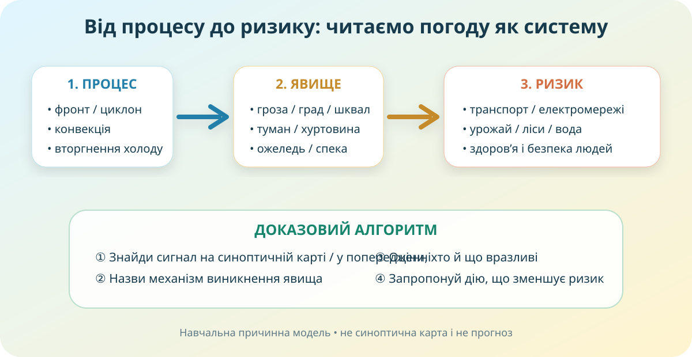

⛈️ Електрика атмосфери
Гроза виникає в умовах потужної конвекції: висхідні потоки у купчасто-дощових хмарах сприяють розділенню зарядів.
Не складаємо музей страшних слів «град, шквал, туман». Сьогодні читаємо синоптичну ситуацію, відділяємо явище від ризику, ловимо підступну пару «ожеледь ↔ ожеледиця» і доводимо, чому одна й та сама погода для різних територій може мати зовсім різні наслідки.
Оберіть явище, яке Ви реально спостерігали у своїй місцевості, і сформулюйте гіпотезу.

Синоптична карта об’єднує спостереження за тиском, фронтами, опадами, хмарністю, вітром та іншими елементами погоди. Відкрийте офіційний прогноз і попередження УкрГМЦ.
Прогноз УкрГМЦ ↗Метеопопередження ↗Як працюють синоптики ↗На синоптичній карті наближається холодний фронт, очікуються грози й поривчастий вітер. Який висновок найкоректніший?
Завдання: не просто назвати явище, а знайти його географічні умови, можливі наслідки й достатні докази для рішення. Цю станцію можна виконати під час роботи в парах або після основних 35 хвилин.
Гроза виникає в умовах потужної конвекції: висхідні потоки у купчасто-дощових хмарах сприяють розділенню зарядів.

Реальні градини після негоди 7 серпня 2021 року. Утворення граду потребує сильних висхідних потоків у грозовій хмарі.

Реальний приклад впливу спеки та дефіциту вологи на посіви у 2025 році. Порівняйте агрометеорологічний ризик із раптовою зливою.
«Сезонні погодні умови. Несприятливі погодні явища» (SCHOOL FOR LIFE, 2022). Перегляньте перші 2–3 хвилини: випишіть три явища, які мають різні причини та наслідки.
На інтерактивній мапі перемкніть вітер → опади/грози → температуру (Windy). Знайдіть Запоріжжя, Карпати та південь України. Порівняйте, які з даних можуть попереджати про небезпеку, але не є самі по собі офіційним попередженням.
Відкрити повну метеокарту Windy · Звірити офіційне попередження УкрГМЦ
Оберіть комбінацію. Алгоритм пояснює потенційні наслідки для цього середовища, а не обчислює офіційний рівень небезпеки.
📌 Для дослідження вдома: порівняйте два історичні метеопопередження та поясніть, чому однакова назва явища не означає однаковий ризик для всіх районів. Правила безпеки ДСНС; Пояснення грозових явищ УкрГМЦ.
Блискавка, град, шквал, локальна злива. Особливо небезпечна для відкритих просторів, мереж, авіації.
Знижує видимість; навіть «тиха» погода може різко підвищити транспортний ризик.
Ризики для здоров’я, врожаю, водних ресурсів і пожежної небезпеки.
Перемети, погіршення видимості, обледеніння, збої транспорту й енергомереж.
| Сценарій | Атмосферний процес | Небезпечне явище | Ризик | Рішення |
|---|---|---|---|---|
| Після спекотного дня швидко ростуть купчасто-дощові хмари | ||||
| Вночі температура біля 0 °C, переохолоджений дощ | ||||
| Тривалий антициклон у липні, дефіцит опадів |
Відкладення льоду на предметах — гілках, дротах, будівлях, поверхнях — коли переохолоджені краплі замерзають при контакті.
Шар льоду саме на земній поверхні та дорогах, який виникає після замерзання води, мокрого снігу або опадів.
Мнемоніка: ожеледиця — дивіться під ноги й на дорогу; ожеледь — лід «одягає» предмети.
Коректне твердження має називати конкретний механізм. Потепління може посилювати теплові хвилі та випаровування; тепліше повітря здатне містити більше водяної пари, що за відповідних умов підсилює інтенсивні опади. Але не кожна гроза, посуха чи ожеледь є «доказом зміни клімату».
Оцінюємо не лише сам процес, а інтенсивність + територію + тривалість + уразливість.
Допомагає встановити механізм: фронти, циклони, антициклони, поля тиску, вітер, опади.
Хороший географічний висновок завершується дією: що саме зменшує ризик і для кого.
Дивіться не як новини, а як синоптик-аналітик. За 2 хвилини зафіксуйте:
Твердження (Claim): яке несприятливе явище є одним із найважливіших ризиків для Вашої місцевості?
Докази (Evidence): наведіть щонайменше два: карта/попередження, спостереження, особливість рельєфу, забудови, транспорту тощо.
Міркування (Reasoning): поясніть причинний ланцюжок «атмосферний процес → явище → вразливість → ризик → дія».